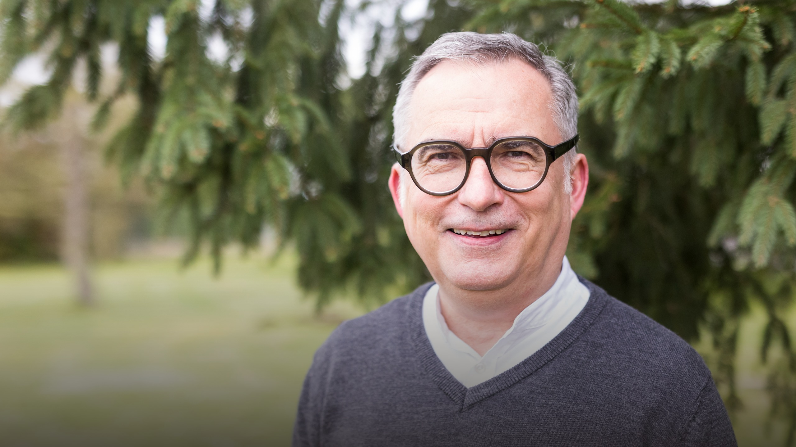
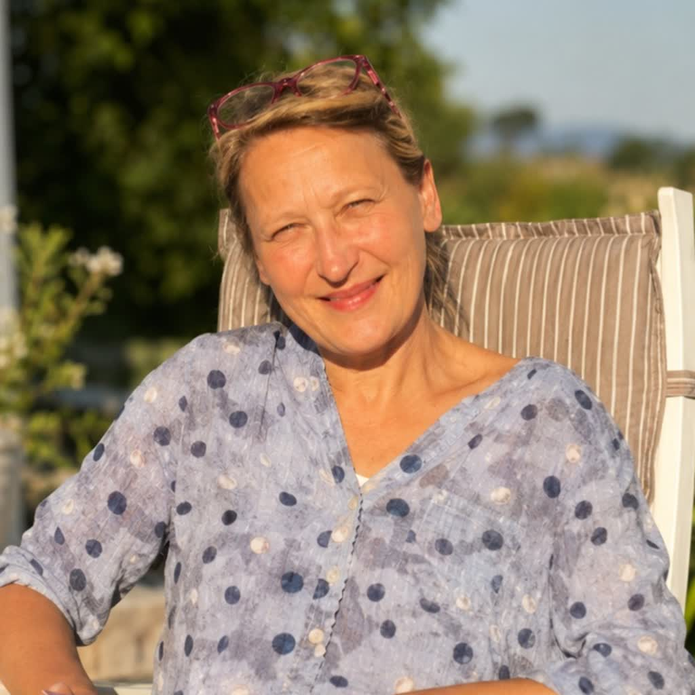

Die eigene Landkarte
Jeder gestaltet seine persönliche Landkarte der Sehnsucht. Wo war ich schon? Wo stehe ich heute? Wo will ich hin?
Privat & persönlichEin Kurs in kleiner Runde
Jeder von uns trägt eine Sehnsucht in sich. Nach Liebe. Nach Freiheit. Nach Glück. Die Frage ist nur: Wie weit bin ich auf meiner Reise bisher gekommen?


Eine Minute darüber, worum es geht
Bevor der erste Abend beginnt: ein kurzer Einblick, wer euch einlädt und worauf sich diese Reise einlässt.
Eine Minute darüber, worum es in diesem Kurs geht.
Die Frage hinter der Frage
Was verändert sich, wenn wir unserer Sehnsucht nicht ausweichen, sondern ihr auf die Spur kommen?
Jeder von uns trägt eine Sehnsucht in sich – nach Liebe, nach Freiheit, nach Glück. In kleiner Runde gehen wir dieser Sehnsucht nach: ohne Programm zum Abarbeiten, sondern mit Zeit füreinander. Wir beginnen mit einem Schnuppertag. Danach entscheidet jeder für sich, ob er den ganzen Weg mitgehen möchte.
Was euch erwartet
Kein Vorwissen nötig. Nur Neugier auf die eigene Geschichte.
Jeder gestaltet seine persönliche Landkarte der Sehnsucht. Wo war ich schon? Wo stehe ich heute? Wo will ich hin?
Privat & persönlichWir hören von Menschen, die ihrer Sehnsucht gefolgt sind – und fragen, was davon für den eigenen Weg taugt.
Erfahrung teilenWelche Rolle spielt Gott in dieser Geschichte? Wir geben keine fertige Antwort vor. Wir finden es gemeinsam heraus.
Offen & ehrlichSechs Abende, fünf Sehnsuchtsfelder
Kein Programm, das abgearbeitet wird. Jeder Abend öffnet ein neues Sehnsuchtsfeld – und baut eine Brücke zu biblischen Texten.
Vom Schnupperabend bis zum Abschluss – Schritt für Schritt.
„Wo war ich schon? Wo stehe ich heute? Wo will ich hin?“
Zwei Weggefährten
Birgit Nandzik und Michael Deck laden dich ein, mit ihnen zu suchen, was diese Sehnsucht stillen kann. In kleiner Runde, ohne Programm zum Abarbeiten. Sie nehmen sich Zeit füreinander.
Unternehmer · geistlicher Begleiter
Michael lädt zusammen mit Birgit zum Kurs ein und bringt seine Erfahrung aus Berufungsbegleitung und geistlicher Begleitung ein.
Gründerin Wegfinder e.V. · Oschersleben
Birgit gründete Wegfinder e.V., einen Ort für pflegende Angehörige – Begegnung, Beratung und Entlastung, wo es sie sonst nicht gibt. Diese Erfahrung aus Begleitung bringt sie in den Kurs ein.
Schnuppertag
Wir beginnen mit einem Schnuppertag. Danach entscheidet jeder für sich, ob er den ganzen Weg mitgehen möchte.
Samstag, 21. November 2026
9 Uhr – bitte den Tag freihalten
Groß Ammensleben – genaue Adresse nach der Anmeldung
Klein – die Plätze sind begrenzt
Anmeldung
Der Knopf öffnet eine vorbereitete E-Mail – Namen eintragen, absenden, fertig. Die genaue Adresse und alles Weitere bekommst du zurück.